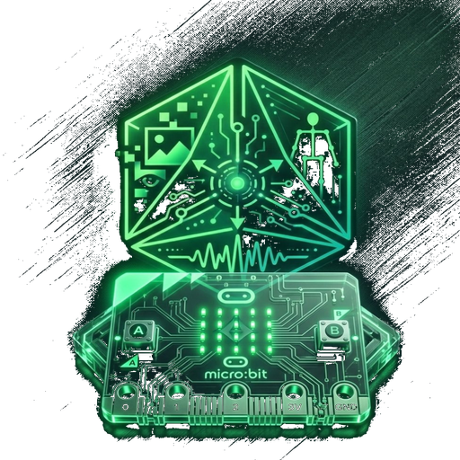
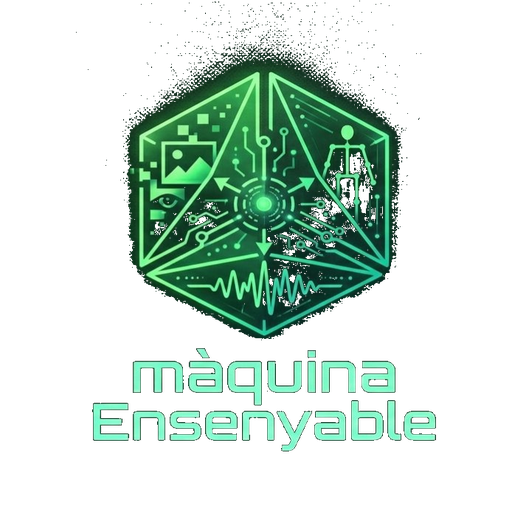

JFace
Tracking facial en temps real. Detecta el gir del cap, obertura de la boca i estat dels ulls, i envia les dades a la micro:bit per Bluetooth. Ideal per controlar robots o interfícies amb gestos facials.
RobHort
El guardià del teu bancal. Detecta animals (gat, ocell, persona) amb la càmera utilitzant models d'IA optimitzats. Tres modes de detecció segons necessitats: ràpid, precís o llarga distància.

Teachable Microbit
Connecta els teus models de Teachable Machine amb la micro:bit. Suporta reconeixement d'imatges, audio i postures. Crea les teues pròpies aplicacions d'IA sense programar.

Màquina Ensenyable
Entrena models d'IA directament al navegador sense programar. Crea classificadors d'imatges i postures amb les teues pròpies dades. Exporta els models i usa'ls en altres projectes.